一、SAMBA介绍
Samba是在Linux和UNIX系统上实现SMB协议的一个免费软件，由服务器及客户端程序构成。
SMB：Server Messages Block，信息服务块，是一种在局域网上共享文件和打印机的一种通信协议，
它为局域网内的不同计算机之间提供文件及打印机等资源的共享服务。
CIFS：common internet file system，微软基于SMB发布，CIFS是公共的或开放的SMB协议版本，
并由Microsoft使用。像SMB协议一样，CIFS在高层运行，而不像TCP/IP协议那样运行在底层。
CIFS可以看做是应用程序协议如文件传输协议和超文本传输协议的一个实现。
SAMBA的功能：
共享文件和打印，实现在线编辑
实现登录SAMBA用户的身份认证
可以进行NetBIOS名称解析
外围设备共享
计算机网络管理模式：
工作组 WORKGROUP：计算机对等关系，帐号信息各自管理
域 DOMAIN： C/S结构，帐号信息集中管理，DC,AD
相关包：
Samba 提供smb服务
Samba-client 客户端软件
samba-common 通用软件
cifs-utils smb 客户端工具
samba-winbind 和AD相关
相关服务进程：
smbd 提供smb（cifs）服务 TCP:139,445
nmbd NetBIOS名称解析 UDP:137,138
主配置文件：
/etc/samba/smb.conf
帮助参看：man smb.conf
语法检查：
1 | testparm [-v][/etc/samba/smb.conf] |
客户端工具：smbclient,mount.cifs
二、SAMBA服务配置
smb.conf继承了.ini文件的格式，用[ ]分成不同的部分
全局设置：
[global] 服务器通用或全局设置的部分
特定共享设置：
[homes] 用户的家目录共享
[printers] 定义打印机资源和服务
[sharename] 自定义的共享目录配置
其中：#和;开头的语句为注释，大小写不敏感
宏定义：
1 | %m 客户端主机的NetBIOS名 |
workgroup 指定工作组名称
server string 主机注释信息
netbios name 指定NetBIOS名
interfaces 指定服务侦听接口和IP
hosts allow 可用“,” ，空格，或tab分隔，默认允许所有主机访问，也可在每个共享独立配置，
如在[global]设置，将应用并覆盖所有共享设置
IPv4 network/prefix：172.25.0.0/24 IPv4前缀: 172.25.0.
IPv4 network/netmask：172.25.0.0/255.255.255.0
主机名：desktop.example.com
以example.com后缀的主机名：.example.com
示例：
hosts allow = 172.25.
hosts allow = 172.25. .example.com
hosts deny 拒绝指定主机访问
config file=/etc/samba/conf.d/%U 用户独立的配置文件
Log file=/var/log/samba/log.%m 不同客户机采用不同日志
max log size=50 日志文件达到50K，将轮循rotate,单位KB
Security三种认证方式：
share：匿名(CentOS7不再支持)
user：samba用户（采有linux用户，samba的独立口令）
domain：使用DC（DOMAIN CONTROLLER)认证
passdb backend = tdbsam 密码数据库格式
实现samba用户：
包：samba-common-tools
工具：smbpasswd pdbedit
samba用户须是Linux用户，建议使用/sbin/nologin
配置samba日志
默认不记录
以IP方式记录日志
1 | log file = /var/log/samba/log.%I |
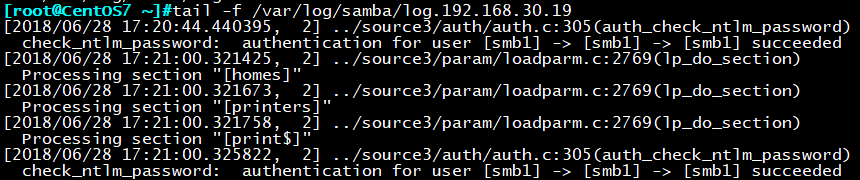
日志文件达到50K，将轮循rotate,单位KB
1 | max log size=50 |
配置目录共享
[共享名称] 远程网络看到的共享名称
comment 注释信息
path 所共享的目录路径
public 能否被guest访问的共享，默认no，和guest ok 类似
browsable 是否允许所有用户浏览此共享,默认为yes,no为隐藏
writable=yes 可以被所有用户读写，默认为no
read only=no 和writable=yes等价，如与以上设置冲突，放在后面的设置生效，默认只读
write list 三种形式：用户，@组名，+组名,用，分隔如writable=no，列表中用户或组可读写，不在列表中用户只读
valid users 特定用户才能访问该共享，如为空，将允许所有用户，用户名之间用空格分隔
备注：每个共享目录应该有独立的[ ]部分
三、SMABA用户管理与挂载
管理samba用户
实现samba用户
包：samba-common-tools
工具：smbpasswd pdbedit
samba用户须是Linux用户，建议使用/sbin/nologin
###
添加samba用户
1 | smbpasswd -a <user> |
修改用户密码
1 | smbpasswd <user> |
删除用户和密码：
1 | smbpasswd –x <user> |
查看samba用户列表：
1 | /var/lib/samba/private/passdb.tdb |
查看samba服务器状态
1 | smbstatus |
挂载CIFS文件系统
手动挂载
1 | mount -t cifs -o user=wang,password=wxlinux //server//shared |
开机自动挂载
1 | cat /etc/fstab 可以用文件代替用户名和密码的输入 |
四、实验：将Linux作为SAMBA客户端访问Windows共享文件
前期准备：
Window系统版本为 win10
Linux系统版本为 CentOS 7.4
Windows系统中共享目录如下：
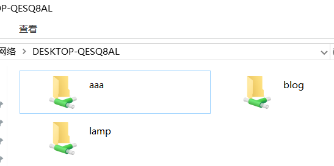
在Windows系统中创建一个test用户(必须以管理员身份创建)

Linux系统：
安装samba-client包
1 | yum install samba-client |
查看Windows系统上的共资源
1 | smbclient -L 192.168.30.1 -U test%123 |

连接Windows系统上的共享资源
1 | smbclient //192.168.30.1/lamp -U test%123 |
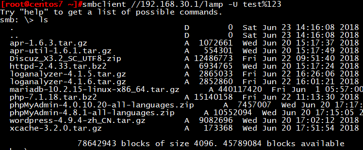
挂载windows共享目录到/mnt/win目录下
1 | mkdir /mnt/win |
也可写入/etc/fstab文件中永久挂载，为了防止明文用户名密码，可用下面写法，将用户和账号保存在一个文件中
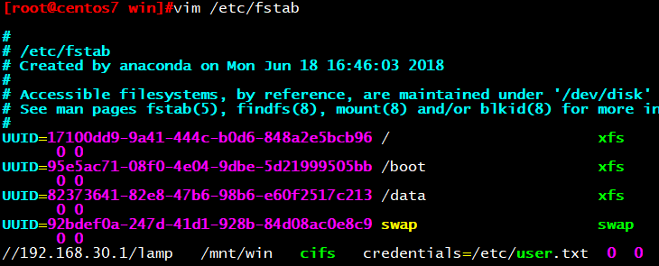
1 | vim /etc/user.txt |
五、实验：Linux系统作为SAMBA服务器端
在LINUX系统中创建SAMBA账号需要先创建LINUX账号在使用smbpasswd命令转换为samba账号
创建linux账号
1 | useradd -s /sbin/nologin smb1 |
将linux账号变为samba账号
1 | smbpasswd -a smb1 |
删除samba账号可使用
1 | smbpasswd –x |
修改samba账号密码：
1 | smbpasswd user |
查看已有的samba账号：
1 | pdbedit -L |
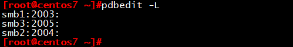
开启smb服务
1 | systemctl start smb |
切换客户端进行测试：
1 |
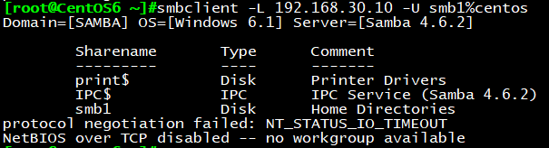
默认以samba用户的家目录作为共享目录
也可在Window作为访问端连接SAMBA服务器
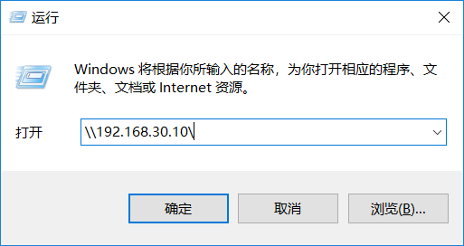
六、实验：SAMBA共享指定目录
添加配置
1 | vim etc/samba/sam.conf |
smbclient //192.168.30.10/share -U smb1%centos
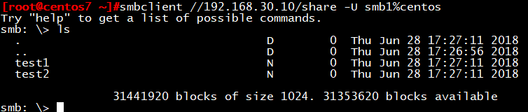
smb3用户由于没有授权，所有拒绝登录
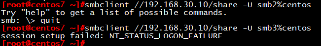
七、实验：针对不同的用户设置不同的共享目录和权限
SAMBA服务器端:
目前已存在的SAMBA用户
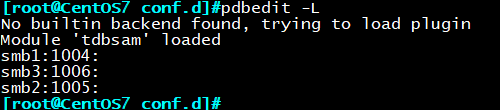
配置文件中加上此行，指定配置目录
1 | vim etc/samba/sam.conf |
创建SAMBA共享目录和测试文件
1 | mkdir /data/smb2 |
创建SAMBA配置目录
1 | mkdir /etc/samba/conf.d/ |
给data目录添加777权限
1 | chmod -R 777 /data/ |
重启smb服务
1 | systemct restart smb |
测试：
使用samb2用户登录，共享目录为/data/smb2
1 | smbclient //192.168.30.7/share -U smb2%centos |
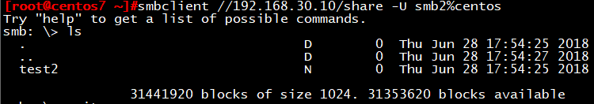
使用samb2用户登录，共享目录为/data/smb3
1 | smbclient //192.168.30.7/share -U smb3%centos |
八、实验：实现多用户SAMBA挂载(仅CentOS 7支持，RHCE)
SAMBA服务器端：
目前已有四个samba账号，smb1，smb2，smb3，smb4
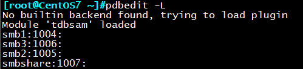
1 | vim /etc/samba/ |
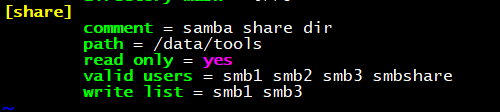
添加/data/tools目录读写权限
1 | chmod 777 /data/tools |
重启smb服务
1 | systemctl restart smb |
客户端：
必须建立同名用户，UID可以不一致
1 | useradd smb1 |
用smbshare用户挂载share目录
1 | mount -o username=smbshare,password=centos,multiuser //192.168.30.10/share /mnt |
若要永久挂载，可修改/etc/fstab目录
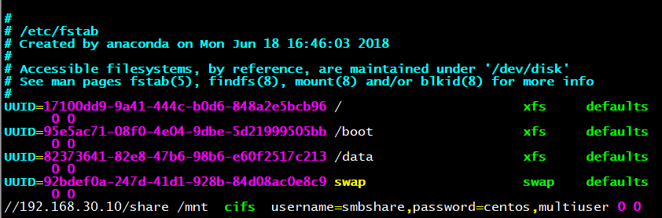
备注：SELinux环境下还需：
1 | chcon -R -t samba_share_t /data/to |
测试
1 | su – smb1 |
验证SAMBA服务器是否有同名用户
1 |
创建f1文件所有者为f1
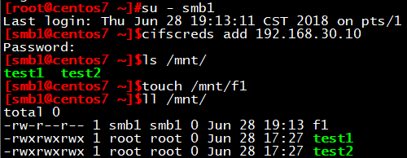
1 | su – smb2 |
由于smb2不在wirte_list表中，不具有读权限，登录失败
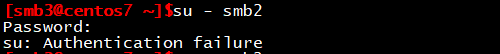
1 | su – smb3 |
创建f3文件所有者为smb3
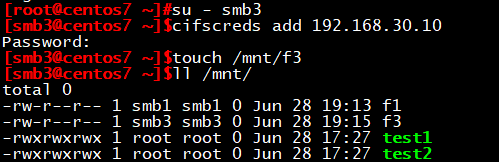